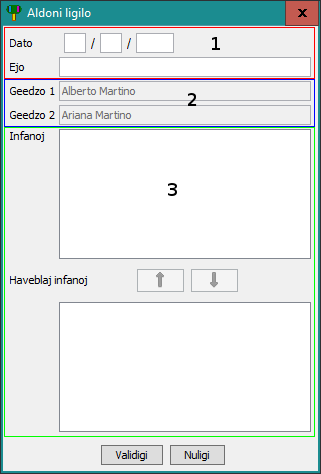

Aldoni ligilo
Por aldoni ligilo, sekvu unu metodon el la tri :
- iru al ;
- aŭ alklaku
 Aldoni ligilo... ;
Aldoni ligilo... ;
- aŭ subtenu Ctrl+L
Nun, selektu la unuan karton ke, vi volas konekti (se ne jam estas), post, alklaku la duan.
Vi vidus tiu fenestro :

La du unuaj tekstujoj (1) estas la edziĝdato kaj la edziĝejo.
La sube du tekstujoj (2) enhavas la nomojn de la geedzoj.
En la zono (3) vi povas aldoni/forigi infanoj. Por aldoni infano, selektu la elementojn en la
suba listo kaj alklaku la  butonon. Por forigi infano,
selektu la elementojn en la supre listo kaj alklaku la
butonon. Por forigi infano,
selektu la elementojn en la supre listo kaj alklaku la  butonon.
butonon.
Iam vi finis, alklaku Validigi por krei la ligilo. Se vi alklakis
tro frue, ne maltrankviliĝu, vi povos eldoni poste.
Nun, estus linio inter la du kartoj kaj la infanoj.
Sekva temo : Eldoni ligilo
 Aldoni ligilo... ;
Aldoni ligilo... ;